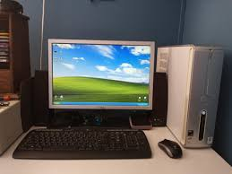
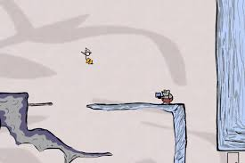
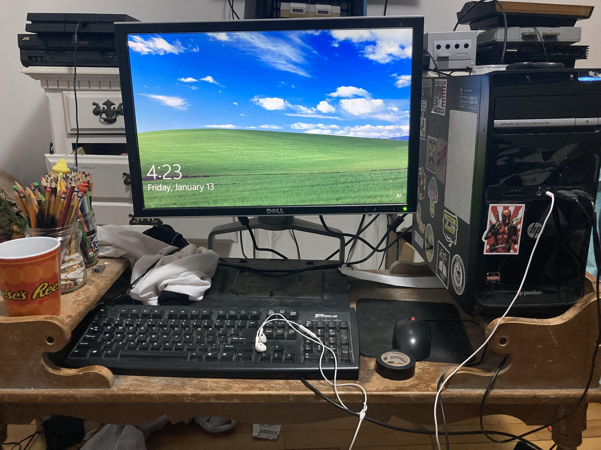
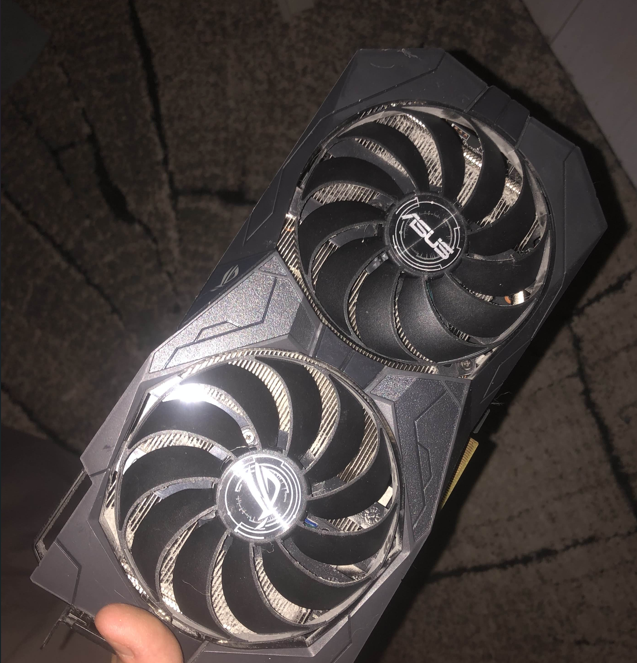

Early on
Early on in my life we had a computer at home and I could see my brothers using it for games and other stuff that I didn't understand at the time. Me and my friend played browser games via Flash on sites like Miniclip, Nitrome and Y8. These games sparked my interest in computers and technology.
 Elementary school
At the start of my elementary school years I went to a liberary where they had computersthat could be used by the public. There I met new friends and really got into playing games online and first games that I really got into were Tanki Online and Transformice. In elementary school we had computer classes where we learned basic computer skills like typing, using a mouse and basic programs like Powerpoint and Word. On 3rd grade I got a PS3 and started playing games like Battlefield Bad Company 2, Little Big Planet, Granturismo 5, Minecraft and GTA once it came out. Sometime during elementary school I got my first laptop which was a Windows 10 HP laptop.
Highschool
I bought a used desktop PC my first programming was actually in Middleschool where I had a course in Skratch programming and then myself tried to learn Python via YouTube tutorials, but I didnt get very far back then. I also started learning waching videos of basic Machine Learning projects of others and coding, but didnt do much myself. I also got more into gaming and started playing games like League of Legends and CS:GO.
I have taken apart my old pc and dont have a picture of it
College/University
I started studying IT and got more serious about learning programming. I built my first PC with parts that I bought myself and learned a lot about hardware and stresstesting.

btw the HDD does not tangle off like that anymore.